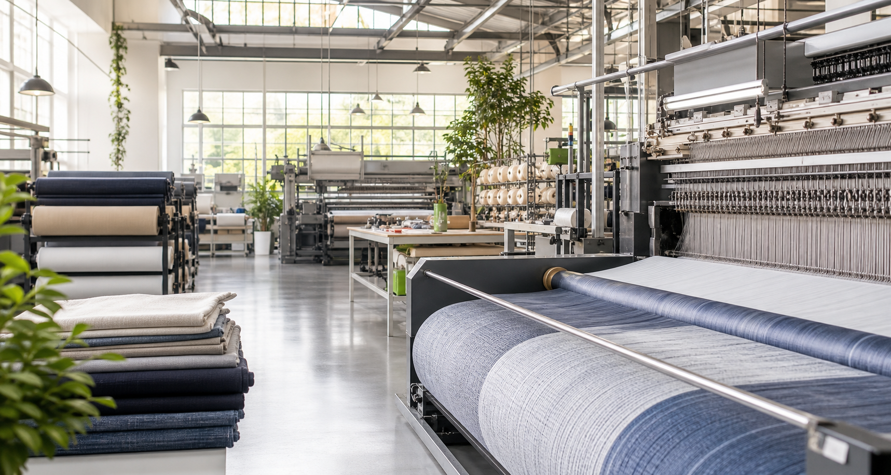

Yarn & Fabric Planning
Material selection, construction planning, GSM targets, and sampling aligned before bulk production begins.

Vertical textile manufacturing
From yarn planning to final packing, every stage is coordinated through one production system with measurable controls and clear timelines.
Production scope
This production page turns factory capability into a modern operational story: clear services, visible proof points, and a direct route for buyers to take action.
Capabilities
Material selection, construction planning, GSM targets, and sampling aligned before bulk production begins.
Controlled machine setup for consistent width, texture, stretch, and repeatable fabric performance.
Shade matching, recipe control, wash testing, and batch tracking for dependable color outcomes.
Compacting, brushing, raising, calendaring, and finishing routes selected for each fabric brief.
Inline checks, lab testing, final inspection, and shipment documentation before release.
Roll marking, barcode-ready packing, carton planning, and export coordination for clean handover.
Process
Fabric brief, target hand-feel, color references, test needs, and commercial constraints are captured early.
Prototype runs help lock construction, finishing route, shade, and performance before scaling.
Planned batches move through knitting, dyeing, finishing, inspection, and packing with traceable checkpoints.
Reports, roll records, packing details, and final inspection results are completed before dispatch.
Quality system
Every batch is checked for physical performance, color consistency, shrinkage, GSM, width, appearance, and packing accuracy. The page design makes these controls visible instead of hiding them behind generic copy.
Production inquiry
Use this section for a real inquiry form, WhatsApp link, or buyer contact route when you connect the site to your business details.